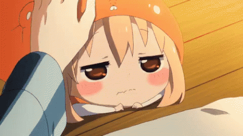
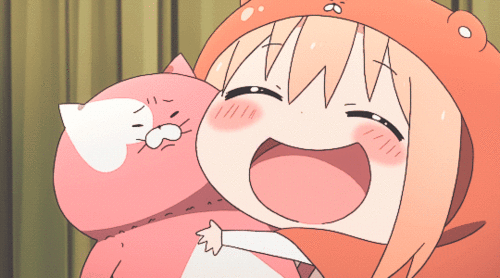

₍ᐢᐢ₎ Gênero: Comédia
Episódios: 12
Autor: Sankaku Head
Ano de lançamento: 2015 ₍ᐢᐢ₎
A série narra as aventuras de Umaru Doma,
uma estudante que mora com seu irmão mais velho, Taihei.
Na escola, Umaru aparenta ser uma estudante ideal
por causa da sua boa aparência, suas notas e seus demasiados talentos.
Mas quando ela regressa a casa, se transforma numa preguiçosa
que vive jogando video game e depende constantemente do seu irmão

Himouto! Umaru-chan” pode ser traduzido como “minha irmãzinha de duas caras”.
Este divertido anime acompanha a jovem estudante Umaru Doma.
Na escola, a jovem é uma referência como estudante exemplar,
mas quando chega em casa se transforma completamente.

Ela é muito desleixada, preguiçosa, bagunceira e
passa a maior parte do tempo jogando videogame.
Todas as responsabilidades escolares caem nas costas
de seu irmão mais responsável, Taihei,
e o anime acompanha a interação e rotina dos dois jovens.
Nesse vídeo você vai poder conhecer um pouco dessa fofura, espero que ela anime seu dia!!
Você pode assistir no Prime video. ദ്ദി（• ˕ •マ.ᐟ